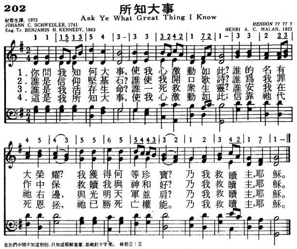

|
|
颂主新歌 |
|
1 Ask ye what great thing I know 2 Who defeats my fiercest foes? 3 Who is life in life to me? 4 This is that great thing I know; |
1.你问我知何大事，使我心激动如此？
|
|
https://www.mred365.cn/szxg/7205.html  Ask Ye What Great Thing I Know
|
|
|
|
|


Ask Ye What Great Thing I Know (Hendon) https://youtu.be/VIncbagdovU -
Ask Ye What Great Thing I Know · The London Fox Singers · London Sinfonia
https://youtu.be/u27HZ0v5eYE
| Text: | Ask Ye What Great Thing I Know |
| Author: | Johann C. Schwedler |
| Translator: | Benjamin Hall Kennedy |
| Tune: | HENDON |
| Composer: | Henri A. C. Malan |
| Harmonizer: | Lowell Mason |
| Short Name: | Johann C. Schwedler |
| Full Name: | Schwedler, Johann Christoph, 1672-1730 |
| Birth Year: | 1672 |
| Death Year: | 1730 |
Schwedler, Johann Christoph, son of Anton Schwedler, farmer and rural magistrate at Krobsdorf, near Lowenberg, in Silesia, was born at Krobsdorf, Dec. 21, 1672, and matriculated at the University of Leipzig, in 1695 (M.A. 1697). In 1698 he was appointed assistant minister at Niederwiese, near Greiffenberg, and began his duties there on the 18th Sunday after Trinity. On the death of the diaconus, Christoph Adolph, he succeeded him as diaconus, in December, 1698; and, finally, in 1701, he became pastor there. He died at Niederwiese, suddenly, during the night of Jan. 12, 1730.
Schwedler was a powerful and popular preacher, and peculiarly gifted in prayer. It is said that sometimes, beginning service at 5 or 6 a.m., he would continue the service to relays who in succession filled the church, till 2 or 3 p.m. He also founded an orphanage at Niederwiese. He was a near neighbour and great friend of Johann Mentzer and N. L. von Zinzendorf. As a hymnwriter he was useful and popular. The principal theme of his hymns was the Grace of God through Christ, and the joyful confidence imparted to the soul that experienced it. Of his hymns, 462 appeared in his Die Lieder Mose und des Lammes, oder neu eingerichtetes Gesang-Buch, Budissin, 1720, Nos. 345-806. Others are in his Wöchentliche Hauss-Andacht, 1112, in his various devotional works, and in the hymn-books of the period.
The only hymn by Schwedler translated into English is:—
Tune Information
| Title: | HENDON (Malan) |
| Composer: | César Malan (1827) |
| Meter: | 7.7.7.7.7 |
| Incipit: | 11151 35433 33242 |
| Key: | F Major |
| Copyright: | Public Domain |
| Short Name: | César Malan |
| Full Name: | Malan, César, 1787-1864 |
| Birth Year: | 1787 |
| Death Year: | 1864 |
Rv Henri Abraham Cesar Malan, 1787-1864.

Born in Geneva, Switzerland, into a bourgeois family that moved to Switzerland to escape religious persecution during the French Revolution, he attended the university in Marseilles, France, intending to become a businessman. Although having some grounding in religious faith by his mother, he decided to attend the Academy at Geneva (founded by Calvin) in preparation for ministry. He was ordained in 1810, after being appointed a college master (teaching Latin) in 1809. Malan was in accord with the National Church of Geneva as a Unitarian, but the Reveil Movement caused him to become a dissident (evangelical) instead of a proponent of the Reformed Church (believing works, not faith, was what mattered). In 1811 he married (wife’s name not found). They had at least two children (one son was Solomon, referenced below). From 1813 on Malan slowly became an evangelical, after being given an understanding of true salvation through grace (not works) in 1816 by two German Lutherans from Geneva. He became saved upon this realization and was so changed that he burned his prized collection of classical authors and manuscripts. In 1817 he preached around Geneva, and one sermon in particular, “Man only justified by faith alone” created a firestorm and brought him into conflict with religious authorities of the region. From then on he wished to help reform the national church from within, but the forces of the Venerable Company were too strong for him and excluded him from the pulpits and caused his dismissal from his regentsship at the college in 1818. Others in agreement with Malan were Charles Spurgeon, Robert Wilcox, Robert Haldane, and Henry Drummond. In 1820 he built a chapel in his garden and obtained the license of the State for it as a separatist place of worship. He preached in that chapel 43 years. In 1823 he was formally deprived of his status as a minister of the national Church. Various events caused his congregation to diminish over the next few years, and he began long tours of evangelization subsidized by religious friends in his land, Belgium, France, England and Scotland. He often preached to large congregations. Malan also authorized a hymn book, “Chants de Sion” (1841). A strong Calvinist, Malan lost no opportunity to evangelize. On one occasion an old man he visited pulled Malan’s hymnal out and told him he had prayed to see the author of it before he died. On a visit to England Malan also inspired author, Charlotte Elliott, to write the hymn lyrics for “Just as I am”, when seeking an answer to her conversion she asked and he advised her to come to Christ ‘just as she was’. Malan published a score of books and also produced many religious tracts and pamphlets largely on questions in dispute between the National and evangelical churches of Rome. He also wrote articles in the “Record” and in American reviews. His hymns were set to his own melodies. He was an artist, a mechanic, a carpenter, a metal forger, and a printer. He had his own workshop, forge and printing press. One of his greatest joys was the meeting of the evangelical alliance at Geneva in 1861 which helped change church views. He retired to his home, Vandoeuvres, in the countryside near Geneva in 1857, dying there seven years later.. He was honored by a visit from the Queen of Holland two years before his death. He is mainly remembered as a hymn writer, having written 1000+ hymn lyrics and tunes. One son, Solomon, a gifted linguist and theologian, became Vicar of Broadwindsor. About a dozen of his hymns appeared translated in the publication “Friendly visitor” (1826). He was an author, creator, composer, editor, correspondent, contributor, translator, owner, and performer.
John Perry
History of Hymns: "Ask Ye What Great Thing I Know"
"Ask Ye What Great Thing I Know"
Johann C. Schwedler, translated by Benjamin H. Kennedy
UM Hymnal, No. 163
Ask ye what great thing I know,
that delights and stirs me so?
What the high reward I win?
Whose the name I glory in?
Jesus Christ, the crucified.
This hymn is characterized by forthrightness and a sure belief in the
crucified Christ.
The first five of the original six stanzas begin with at least one and as
many as three questions. Hymns often employ a technique of the rhetorical
question. However, none of these questions are rhetorical; the staunch
refrain concludes each stanza with the resolute answer: “Jesus Christ, the
crucified.”
The questions in this hymn tell us more about the author’s intent than do
the answers. In stanza one the queries require a response stating who is the
greatest, most delightful, highest reward, and who has the most glorious
name.
Stanza two gives us more insight into the nature of Christ—one who is
all-powerful and all-compassionate, seeking a being that “defeats the
fiercest foes,” “consoles the saddest woes” and “revives the fainting
heart.”
The third stanza employs a powerful antithesis that points to a singular
being who is both “life in life” and “the death of death.” The stanza then
poses what seems to be a personal question, though all Christians can ask
the same: “Who will place me on his right. . . ?”
One stanza that isn’t included in the UM
Hymnal enlarges upon the answer:
What is faith’s foundation strong?
What awakes my heart to song?
He who bore my sinful lead,
purchased for me peace with God,
Jesus Christ, the crucified.
The questioner was Johann Christoph Schwedler (1672-1730), the son of a
German farmer and local magistrate, and a “preacher, hymn writer, and
humanitarian” according to UM
Hymnal editor, the Rev. Carlton Young. Following
graduation from the University of Leipzig in 1697, he served as a church
assistant, deacon and pastor in only one location, Niederweise, until his
death.
Schwedler was a prolific hymn writer with hundreds of hymns. He lived near
his friend Count Nikolaus von Zinzendorf (1700-1780), a fellow composer,
social reformer and supporter of the Moravian Church. Zinzendorf’s hymns
influenced John Wesley after he encountered Moravians on the ship to America
in 1736.
In the 19th century, our hymn was translated twice from the original German.
First, “Do You Ask What Most I Prize?” was prepared for Moravian hymnals.
“Ask Ye What Great Thing I Know,” more commonly used, was written by
Benjamin Hall Kennedy (1804-1880) and included in Hymnologia
Christiana, or Psalms and Hymns Selected and Arranged in the Order of the
Christian Seasons (1863).
According to Dr. Young, the 1863 collection was a key source for
19th-century hymnody, containing several of Kennedy’s original hymns and
translations, including others from the German language. Kennedy was an
English minister and educator known for his work in teaching Latin.
Our hymn’s final stanza—unlike the others—asks no questions and stands as a
powerful assertion of faith:
This is that great thing I know;
this delights and stirs me so:
faith in him who died to save,
him who triumphed o’er the grave:
Jesus Christ, the crucified.
Dr. Hawn is professor of sacred music at Perkins School of Theology, SMU.
https://www.umcdiscipleship.org/resources/history-of-hymns-ask-ye-what-great-thing-i-know
ASK YE
WHAT GREAT THING I KNOW hymnstudiesblog
For I determined not to know any thing among you, save Jesus Christ, and Him
crucified (1 Cor. 2:2)
INTRO.:
A hymn which points out that in regard to salvation and our
relationship with God we should determine not to know anything but Jesus Christ
and Him crucified is Ask Ye What Great Thing I Know. The text was written in
German (Wollt ihr wissen, was mein Preis?) by Johann Christoph Schwedler, who
was born on Dec. 21, 1672, at Krobsdorf in Schlesien (Silesia), Germany, the son
of a farmer and rural magistrate. Enrolling at the University of Leipzig in
1695, he graduated with an MA in 1697. Then in 1698, he became assistant
minister at Niederwiese, near Greifenberg also in Schlesien, following the death
of his predecessor, Christoph Adolph. In 1701, he became the minister there. A
gifted preacher, he also founded an orphanage in Niederwiese. Count Nikolaus von
Zinzendorf lived near him and the two were friends.
Schwedlers hymnbooks include Wöchentliche Hauss-Andacht in 1712 and Die Lieder
Mose und des Lammes, oder neu eingerichtetes Gesang-Buch (Songs of Moses and the
Lamb in 1720. However, it was not until after his sudden death on Jan. 12, 1730,
at Niederwiese that his best known hymn was published posthumously in the 1741
Hirschberger Gesangbuch. The usual translation from German to English was made
by Benjamin Hall Kennedy (1804-1899). It first appeared in the 1863 Hymnologia
Christiana, or Psalms and Hymns Selected and Arranged in the Order of the
Christian Seasons. Other translations have been made, including Do you ask what
most I prize? by James Mearns in the Moravian Hymn Book of 1886; Would you know
my greatest prize? by Herman H. Brueckner in the Wartburg Hymnal of 1918; and
What, ye ask me, is my prize? by George Ratcliffe Woodward in the The Hymnal for
the General Assembly of the Presbyterian Church in the U.S.A. of 1933.
The tune (Hendon) most often used in English books for Schwedlers hymn was
composed by Henri Abraham César Malan, first appeared in his 1827 Chants de
Zion, was harmonized by Lowell Mason in his 1841 Carmina Sacra, and in our books
is most often associated with William Hammonds Lord, We Come Before Thee Now.
Some books use a tune (Redhead or Petra) composed by Richard Redhead for
Augustus M. Topladys Rock of Ages but most often used with James Montgomerys Go
to Dark Gethsemane as well as sometimes with Thomas T. Lynchs Gracious Spirit,
Dwell with Me. However, the traditional German tune (Wollt ihr Wissen) used with
Schwedlers hymn first appeared in the Melodienbuch von Rautenburg edited by J.
Cammin. The modern harmonization was made by G. H. Palmer. Many newer books, in
seeking to update the language for whatever reason, have changed the first line
to read, Ask ME what great thing I know.
The song emphasizes that the most important thing for us to know is the
crucifixion of Jesus.
I. Stanza 1 tells us that it is the basis for our reward
Ask ye what great thing I know,
That delights and stirs me so?
What the high reward I win?
Whose the Name I glory in?
Jesus, Jesus, Jesus Christ, the Crucified.
A. Because Jesus died for us, we can delight or rejoice in Him: Phil. 4:4
B. One thing that enables us to rejoice is that through the death of Christ we
can look for the reward: 2 Jn. v. 8
C. Therefore, we should glory in the name of Him who was crucified for us: Gal.
6:14
II. Stanza 2 tells us that it is the basis for our faith
What is faiths foundation strong?
What awakes my heart to song?
He who bore my sinful load,
Purchased for me peace with God,
Jesus, Jesus, Jesus Christ, the Crucified.
A. One of the facts which forms the foundation for our faith is that Jesus
Christ died for our sins according to the scriptures: 1 Cor. 15:1-4
B. In doing this, He bore our sinful load on the tree: 1 Pet. 2:24
C. Thus, He purchased for us peace with God through the cross: Eph. 2:14-17
III. Stanza 3 tells us that it is the basis for our wisdom
Who is He that makes me wise
To discern where duty lies?
Who is He that makes me true
Duty, when discerned to do,
Jesus, Jesus, Jesus Christ, the Crucified.
A. Christ, the one who died for us, is wisdom from God: 1 Cor. 1:18, 30
B. He helps us to discern good from evil: Heb. 5:14
C. He also helps us to see where duty lies: Rom. 15:27
IV. Stanza 4 tells us that it is the basis for our victory
Who defeats my fiercest foes?
Who consoles my saddest woes?
Who revives my fainting heart,
Healing all its hidden smart?
Jesus, Jesus, Jesus Christ, the Crucified.
A. It is the death of Christ that makes it possible for us to defeat our
fiercest foes by destroying the power of the devil: Heb. 2:14-15
B. In so doing, He consoles our saddest woes, giving us the comfort of God: 2
Cor. 1:3-5
C. And He revives our fainting heart by healing all its hidden smart: Matt.
13:15
V. Stanza 5 tells us that it is the basis for our life
Who is life in life to me?
Who the death of death will be?
Who will place me on His right,
With the countless hosts of light?
Jesus, Jesus, Jesus Christ, the Crucified.
A. Jesus who died came that we might have life and have it more abundantly: Jn.
10:10
B. As a result, He will place us on His right at His throne just as He was
placed at His Fathers right at His throne: Rev. 3:21
C. There we can join with the countless hosts of light to praise the name of Him
who redeemed us by His blood: Rev. 5:8-12
VI. Stanza 6 tells us that it is the basis for our salvation
This is that great thing I know;
This delights and stirs me so;
Faith in Him who died to save,
Him who triumphed over the grave:
Jesus, Jesus, Jesus Christ, the Crucified.
A. One thing which we can know with assurance is that God commends His love
toward us in that while we were sinners Christ died for us: Rom. 5:8
B. Therefore, we must have faith in Him who died to save us: Acts 20:21
C. And this faith is the result of the fact that He triumphed over the grave in
His resurrection from the dead: Rom. 1:3-4
CONCL.:
This hymn is practically unknown among churches of Christ because it has been in almost none of our hymnbooks published by brethren through the year. There is the possibility which I can think of is that it might have been used in the 1986 Great Song Revised, but the vast majority of my hymnbooks are in storage so I cannot check on this. There are many things about Gods dealings with mankind that we may never fully understand in this life. But we can know beyond doubt that was crucified for our sins. Thus, it is the best answer that we can give to the question, Ask Ye What Great Thing I Know.
https://hymnstudiesblog.wordpress.com/2010/08/09/ask-ye-what-great-thing-i-know/
Words: Johann Christoph Schwedler (b. Dec. 21, 1672; d.
Jan. 12, 1730)
Music: Hendon, by Henri Abraham César Malan (b. July 7,
1787; May 18, 1864)
Links:
Wordwise Hymns
The Cyber
Hymnal
Note: Schwedler’s hymn was translated into English by Benjamin Kennedy in 1863. The original had six four-line stanzas, with a one-line refrain, Jesu der Gekreuzigte (Jesus the Crucified). The tune Hendon is also used commonly with the hymn Take My Life and Let It Be.
Many hymn books I’ve seen do not include this fine hymn at all. Those that do seem to use CH-1, 4, 5, and 6, though one includes CH-2. The entire hymn is worth reading and using. You might also try singing the song antiphonally, with part of the congregation singing the first four lines, and another singing the final line.
Considering this hymn, I’m reminded of a scene in the excellent 1953 motion picture Martin Luther, which gives a carefully researched depiction of the great reformer’s life. As a young priest, he had begun to question some of the beliefs and practices of the Church of Rome. When confronted by his superior, and asked with what he would replace all the rituals and relics of the church, he replies simply, “Christ.”
Johann Schwedler’s hymn drew its inspiration from two Bible texts in particular. “I determined not to know anything among you except Jesus Christ and Him crucified” (I Cor. 2:2). And, “God forbid that I should boast except in the cross of our Lord Jesus Christ” (Gal. 6:14). Though there is much more in the Bible than that–important doctrines to be studied, and truths to be applied–the Person and work of Christ is central to all.
CH-1) Ask ye what great thing I know,
That delights and stirs me so?
What the high reward I win?
Whose the name I glory in?
Jesus Christ, the Crucified.
CH-2) What is faith’s foundation strong?
What awakes my heart to song?
He who bore my sinful load,
Purchased for me peace with God,
Jesus Christ, the Crucified.
It was the Lord Jesus Christ Himself who taught that the pages of the Word of God centred on Him. “These are they which testify of Me” (Jn. 5:39). Teaching His followers, after His resurrection, “He opened their understanding that they might comprehend the Scriptures” (Lk. 24:45). And Jesus declared that “all things must be fulfilled which were written in the Law of Moses and the Prophets and the Psalms concerning Me” (vs. 44). “Beginning at Moses and all the Prophets, He expounded to them in all the Scriptures the things concerning Himself” (vs. 27; cf. Jn. 5:39). “The testimony of Jesus is the spirit of prophecy” (Rev. 19:10), meaning the witness to Christ and about Christ inspires and infuses all of it.
In pre-incarnate appearances, in symbol, and in prophecy, Christ is found on every page of the Old Testament and, in narrative, doctrinal instruction, and prophecy, He saturates the pages of the New Testament. In fact, more than simply the words printed in red in some of our Bibles are His. As the second Person of the Godhead, it is legitimate to think of all the Bible not only as inspired by the Holy Spirit (II Tim. 3:16) but as “the Word of Christ” (cf. Col. 3:16; I Pet. 1:10-11).
CH-6) This is that great thing I know;
This delights and stirs me so;
Faith in Him who died to save,
Him who triumphed over the grave:
Jesus Christ, the Crucified.
Questions:
1) How should the centrality of Christ affect the preaching in our
churches (and not just when the passage is found in the four Gospels)?
2) How should the centrality of Christ affect our daily lives?
Links:
Wordwise Hymns
The Cyber
Hymnal
https://wordwisehymns.com/2012/03/30/ask-ye-what-great-thing-i-know/